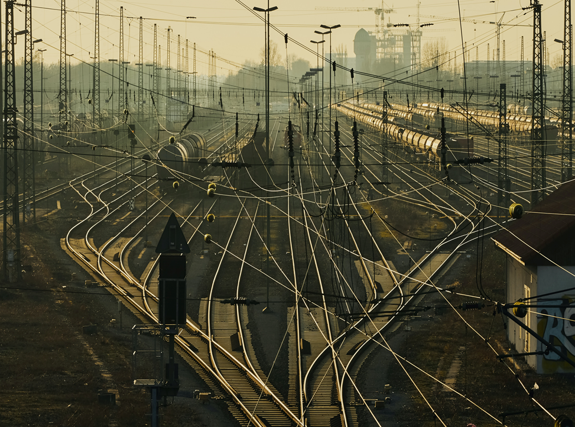
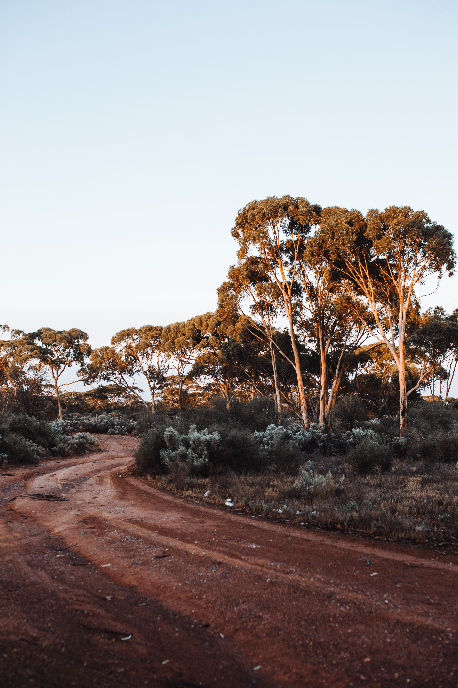
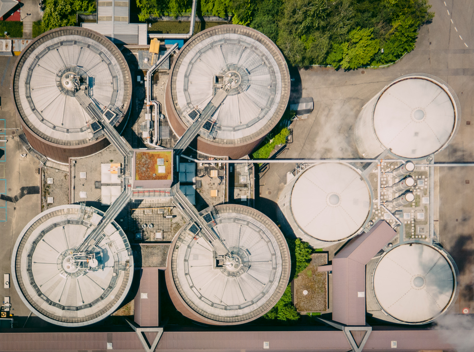
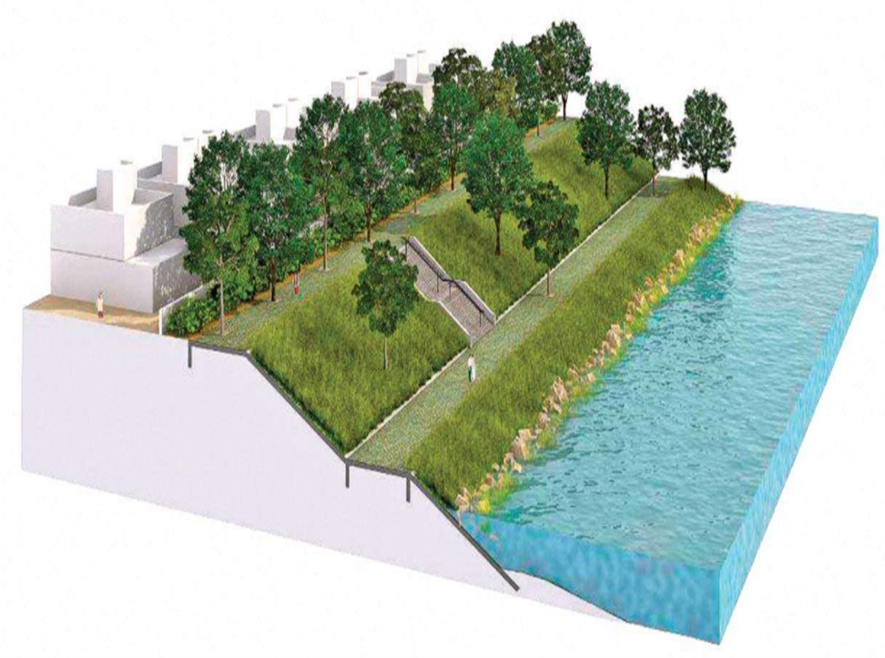

RAILWAYS
- Maintenance work of Track between AZAMGARH – SHAHGANJ for one year. Uttar Pradesh, (India)
- Maintenance Work (Zone works) for period ending 30.06.2021 on Zone No- 11 Ujhayani to kasganj (Ex.Both). Uttar Pradesh (India)
- Maintenance Work (Zone works) for period ending 30.06.2021 on Zone No- 10 Makrandpur (Ex) Ujhayani (Inc). Uttar Pradesh (India)
- GIS Mapping of Indian Railway off Track Assets using Hand held deices on Bhopal division. Madhya Pradesh (India)
- Maintenance Work of BUW-STP (Sitapur) Section : Through fitting renewal at km. 2/0 – 17/0, Length 15.0 Km, Lucknow-NER-Division. Uttar Pradesh (India)

HIGHWAYS

- Safety Consultant: Safety Consultant for "Strengthening of existing carriageway from km 126.00 to km 140.00 of NH-60 under Salboni NH Sub-division No. II, P, W (Roads) Directorate, in the District of Paschim Medinipur, West Bengal during the year 2018-19 on EPC mode. West Bengal, (India)
- Safety Consultant for the work of "Stage Strenghening under Annual Plan for the year 2019-2020 from Km 44/000 to 445/000 and Km 500/000 to 510/000 (Total Length 15.00 km.) of NH-52 (New NH-515) on EPC mode under Nagaon NH Division, Nagaon in the State of Assam. Assam, (India)
- Road Safety Auditor/Expert: for preparation of design estimate etc for carring out long term measure including cautionary measures and/ or short term measures for road accidents black spots on National Highways under Package-04, Sagar in State of Madhya Pradesh Madhya Pradesh, (India)
- Highway (6 Lane) -Consultancy Services for preparation of DPR for development of Economic Corridors, Inter Corridors and Feeder Routes to improve the efficiency of freight movement in India under Bharatmala Pariyojana (PKG- 3 Lot 6 Kerala /Karnataka. Kerala and Karnataka, (India)
- Highway (6 Lane)-Consultancy Services for preparation of EIA/EMP, SIA/LAP, RAP for preparation of DPR for development of Economic Corridors, Inter Corridors and Feeder Routes to improve the efficiency of freight movement in India under Bharatmala Pariyojana (PKG-5 Lot-5). Odisha (India)
- Highway (6 Lane)-Consultancy Services for preparation of EIA/EMP, SIA/LAP, RAPfor preparation of DPR for development of Economic Corridors, Inter Corridors and Feeder Routes to improve the efficiency of freight movement in India under Bharatmala Pariyojana (PKG-3 Lot-4). Madhya Pradesh / Gujarat (India)

- Highway (2 Lane)-Consultancy Services for preparation of EIA/EMP, SIA/LAP, RAPfor carrying outfeasibility study and detailed projectpreparation for Redesigning, Rehabilitation and Up-gradation to 2- lane/2-lane with paved shoulders or its strengthening in the State of Himachal Pradesh. Package No. HP/Shimla/13. Himachal Pradesh, (India)
- Highway (4 Lane)- Consultancy Services for Feasibility Study and preparation of Detailed Project Report for Khalikote- Kodala-Budhamba-Boirani- Koinphulia-Aska Road in the State of Odisha.(NH declaration Approved “In Principle”) Odisha, (India)
- Highway (4 Lane)- Consultancy Services for preparation of EIA/EMP, SIA/LAP, RAP for the Feasibility study/Detailed Project Report of Selected road stretches for NH Connectivity to (i) Anandpur on NH-20 satkosia-Kaplipada-Udala-Baripada on NH-18 (ii) Khordha(NH-57)-Chandka- Cuttack (iii) Baleswar on NH-18 extend to Chandipur (Package No. NHAI/Odisha). Odisha, (India)
- Highway (4 Lane) -Consultancy Services for preparation of EIA/EMP, SIA/LAP and RAPfor Project Management Phase I including preparation of Detailed Project Report of selected Stretches/corridors National Highways/State Roads for up-gradation to 2/4 lane with paved shoulder configuration(Package-36l,length 184km. HaatGhamahariy-jagannathpur- Baraiburu-Saddle Manoharpur-Anandpur- Bano-Kalebira, in the state of Jharkhand (India)
- Highways (2 Lane)- Consultancy Services for preparation of SIA and RAP for Feasibility Study and Preparation of Detailed Project Report for Im Configuration of Various State Highways and Major District Roads in Jharkhand for Package No. SHAJ/DPR/2011/03 for Koderma-Domchanch-Khorimahua - Jamua Road (SH-13) Jharkhand, (India)
- Highways (2 Lane)- Consultancy Services for preparation of SIA and RAPfor Feasibility Study and Preparation of Detailed Project Report (DPR) forImprovement and Up-gradation of Bagdaha- More-Palajori-Kerabani- Haripur-Basukinath-Nonihat Road (Package-ID : BKN) Jharkhand, (India)

- Highways (2 Lane)-Consultancy Services for preparation of SIA and RAPfor the Preparation of Detailed Project Report for the improvement and Up gradation to 2-lane with paved shoulders configuration of various MDR/SH sections in Jharkhand (Package-1: Deoghar- Satsangnagar-Bhirkhibad-Bengabad Road,2.Deoghar-Madhupur (Via Mohanpur) Road. Jharkhand, (India)
- Highways (2 Lane) -Consultancy Services for thePreparation of Social Impact Assessment Report and Resettlement & Rehabilitation Action Plan for Dumka-Masalia-Kundhit-Nala Road up to West Bengal Border (MDR-193) in the State of Jharkhand. Jharkhand, (India)
- Super Communication Expressway (8 Lane) - Authority’s Engineer for Nagpur-Mumbai Super Communication Expressway (Maharashtra Samruddhi Corridor) in the State of Maharashtra under EPC Mode Package 9, from Km. 390.445 to Km. 444.485 (village Bendewadi to village Fatiwabad) in District Aurangabad. Maharashtra, (India)
- Highway (6 Lane)- Independent Engineer Services during Operation & Maintenance (O&M)Period for 6 laning Project of Etawah (Km 323.475) to Chakeri (Km 483.687) Section of NH-2 (New NH19) on DBFOT basis under NHDP Phase-V in the State of Uttar Pradesh(India)
- Highway (4 Lane)- Independent Engineer Services during Operation & Maintenance Period for 4 laning of Kagal-Satara Section NH-48 (Old NH-4) from Km 592.240 to Km 725.000 in the State of Maharastra under NHDP Phase-I on BOT Basis. Maharashtra, (India)
- Consultancy Services for Preparation of RAP and Social Impact Assessment of N.H.-17 (100 km) in the state of Maharashtra (India)
- Consultancy Services for Preparation of RAP and Social Impact Assessment for the Preparation of Detailed Project Report for Rehabilitation and up gradation of Hisar to Dabwali Section of NH-10 under NHDP Phase -IV in the State of Haryana (India)
BRIDGES
- Safety Consultant for "Construction of New Bridge over river Krishnai (Br. No.-34l1) on NH-17 (Old NH-37) under Guwahati NH Division under A.P. 2019-20 in the state of Assam under EPC mode. Assam, (India)
- Consultancy Services to Carrying out Environmental & Social Impact Study & Economical Analysis for Construction of High Level Bridges (184) on State Highways & MDRs in Rewa District, Madhya Pradesh (Package-IV), Funded by New Development Bank. Madhya Pradesh, (India)
- Consultancy Services to Carrying out Environmental & Social Impact Study & Economical Analysis for Construction of High Level Bridges (184) on State Highways & MDRs in Jabalpur and Seoni District, Madhya Pradesh (Package-V), Funded by New Development Bank. Madhya Pradesh, (India)
- Consultancy Services to Carrying out Environmental & Social Impact Study & Economical Analysis for Construction of High Level Bridges (184) on State Highways & MDRs in Ujjain District, Madhya Pradesh (Package- VI), Funded by New Development Bank. Madhya Pradesh, (India)
RURAL ROADS
- Technical Support Consulting Services for Rural Connectivity Investment Programme-I and Second Rural Connectivity Investment Programme in RCIPs State (Assam, Odisha, West Bengal, Chhattisgarh and Madhya Pradesh), Funded by Asian Development Bank. Assam, Odisha, West Bengal, Chhattisgarh and Madhya Pradesh, (India)
- Consultancy Services of State Quality monitoring under PMGSY in the district of Keonjhar, Mayurbhanj and Sundergarh in the state of Odisha(Indi
- Technical Support Consultancy (TSC) Services for Rural Connectivity Investment Programme under ADB Loan(Loan No. 2881-IND) in RCIPs States (Assam, Odisha, West Bengal, Chhattisgarh and Madhya Pradesh), Funded by Asian Development Bank. Assam, Odisha, West Bengal, Chhattisgarh and Madhya Pradesh, (India).

WATERSHED
- Consultancy Service for Mid-terms Evaluation of IWMP for the year 2009 to 2012 in Uttar Pradesh and Orissa (India)
- Consultancy for Preparation of Detailed Project Report for 9 micro Watersheds (25 Villages) of Uttar Kashi Districts of Uttarakhand (India)
STP/ETP AND CITY SANITATION
- Consultancy Services for the documentation and processing CETP grants for 40 MLD CETP (Focul Point Module ) project at Tajpur Road Ludhiana , Panjab (India)
- Consultancy Services for preparation of Preliminary Design and preparation of EPC contract Documents for 15 MLD Water Treatment Plant(Expendable to 60 MLD) for Port Gentil Town, Gabon, Africa (Africa)
- Consultancy for Preparation of City Sanitation Plans for for 3 cities namely Kota, Sawai Madhopur & Bhilwara of Rajasthan (India)
- Consultancy Services for Preparation of City Sanitation Plans for for 3 cities namely Bikaner, Sriganga Nagar and Hanuman Garhof Rajasthan (India)

RIVER DEVELOPMENT

- Consultancy Services for the Preparation of Environment and Social Impact Assessment Study for proposed river front development of 17 Ghats along river Ganga in Patna, Bihar (India)